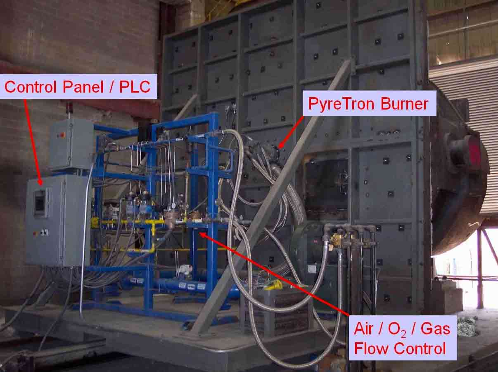
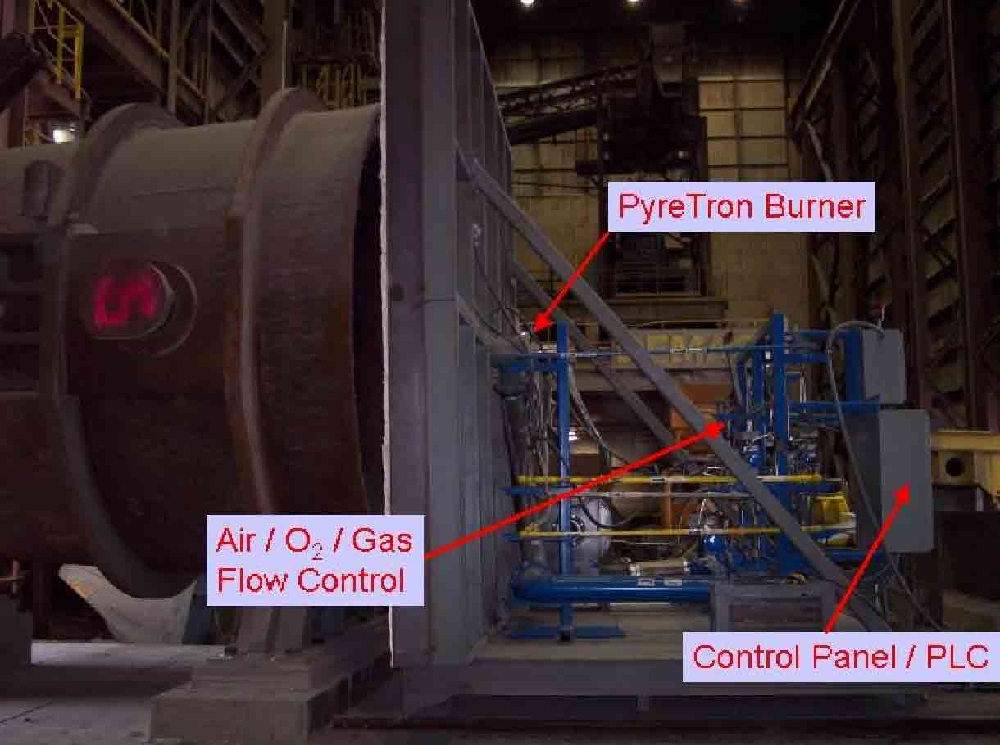

Ladle heating, today, is almost as critical to the steelmaking operation as any other process. The key objective of ladle heating is to avoid, or better limit, the metal temperature fall due to the metal transfer into a ladle. Today, with the new techniques of ladle metallurgy (degassing, desulphurization etc), high temperatures of preheating are frequently required. The energy cost of ladle heating has consequently grown and, in the same time, more attention is given to it.
The evolution in refractory materials allows the use of air-oxy- fuel burners, such as ACI's PyreTron burner, to realize the ladle preheating, with very good performances and with all the advantages related to oxy-combustion. Some of the main benefits of ACI’s PyreTron technology, which has been installed in over 140 ladle heating systems in the last 20 years, are following.
Cost saving
PyreTron’s air-oxy- burner technology gives the flexibility to run the burner according to fuel and O2 costs. It can run with high O2 participation when fuel costs are high and with high air participation when O2 costs are high. So the customer has the flexibility to run their heater depending on market situation or fuel/ O2 availability while also providing them the highest possible cost saving.
Fuel saving
PyreTron can achieve upto 60% fuel saving compared to air burners depending on ladle operation.
Longer refractory life
Since PyreTron has the flexibility to operate with varying O2 participation, the customer can adjust the flame temperature according to operational needs such as high air participation while drying and high O2 participation while holding. It provides them the most ideal flame temperature for their operation thus improving the ladle refractory life.
Increased reliability and lower maintenance
PyreTron burners are air cooled because of their design so need very little maintenance throughout their life. Some of our burners have been in ladle heating operation for over 20 years without any issues.
Reduction in heating time compared to air burners
The variable O2 participation provides up to 30% reduction in heating time compared to conventional air burners.
 